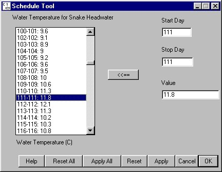

to update the display list with the new values and redraw the corresponding graph.
to update the display list with the new values and redraw the corresponding graph.
Schedule Tool windows allow for keyboard input of data by time periods in days or hours. Schedule Tool windows occur two ways in COMPASS. Every Editable Graph window includes a Schedule button which opens a companion Schedule Tool window for editing the data. In addition, COMPASS contains Schedule Tool windows that exist separately from Editable Graph windows, for example, Powerhouse Schedule (Dam Menu).
to update the display list with the new values and redraw the corresponding graph.
You can define a period to be a single day or a range of days. A single value can be applied to a range of days even if values are already specified for the days. Use the steps outlined above (create a new period) to create a new range of days.
to update the display list with the new values and redraw the corresponding graph.
Schedule Tool features and functions

Schedule Tool window